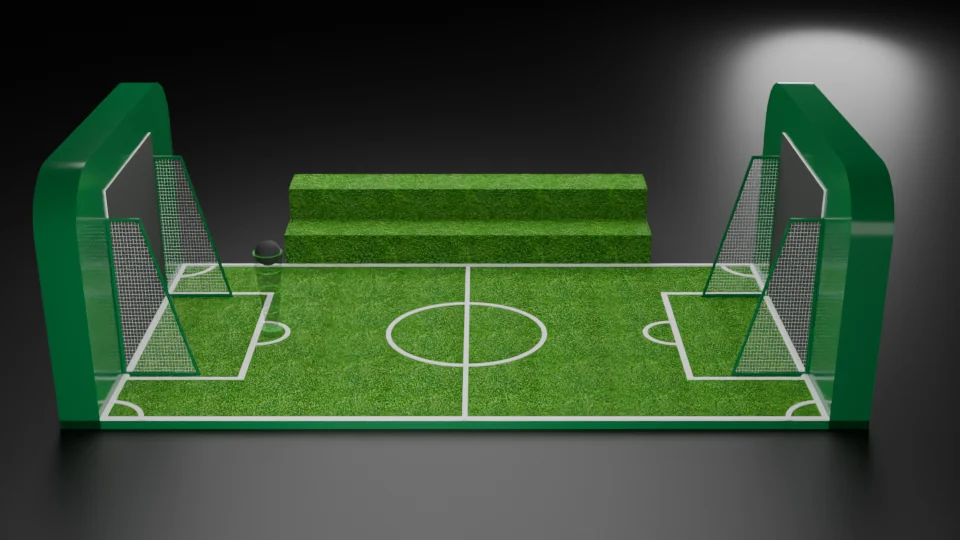
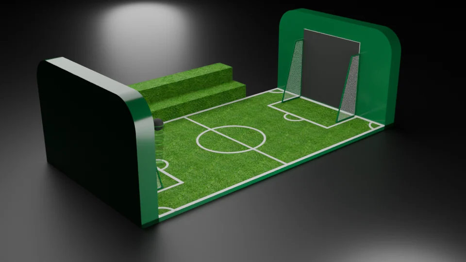
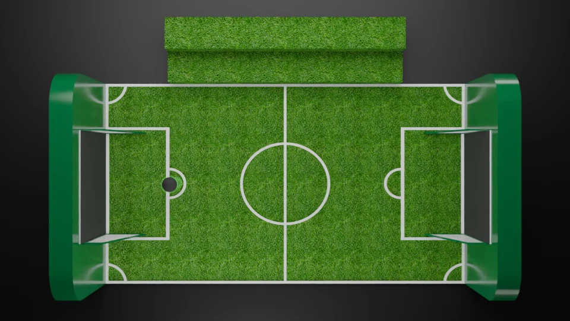

Marked miniature pitch
Two editable scene revisions and backups are present.
A complete playing field in a compact setting.
Explore the story
Bring a small pitch, screens and seating into one clear arrangement.
Marked turf, netted goals and end-screen housings define the field. A stepped spectator bench gives the saved-camera composition a second viewing position.
Two editable scene revisions and backups are present.
The later thumbnail shows a large framed panel on a platform.
Provided option branches contain STL models and reference images.
Explore the complete compositions and interface states. Select any image for a closer look.
03 / PROJECT IMAGES
Select a view to explore.
A miniature football-pitch installation with two netted goals, tall end screens, marked turf and a stepped spectator bench.
An angled native view of the miniature pitch, stepped turf bench, end wall and opposite netted goal.

An overhead native view of the marked pitch, opposing goals and stepped bench.

Structure, interaction and visual decisions that give the work its character.
RoleScene composition, visual treatment and rendering; confirm the specific personally created or adapted elements.
AssetsThe native scene includes supplied football and installation components. This preview documents spatial staging and does not establish original modeling of every component, playable game behavior or delivered installation. Contribution and public-use clearance remain pending.
StatusPrivate evidence-grounded study; final delivery and publication status remain unverified.